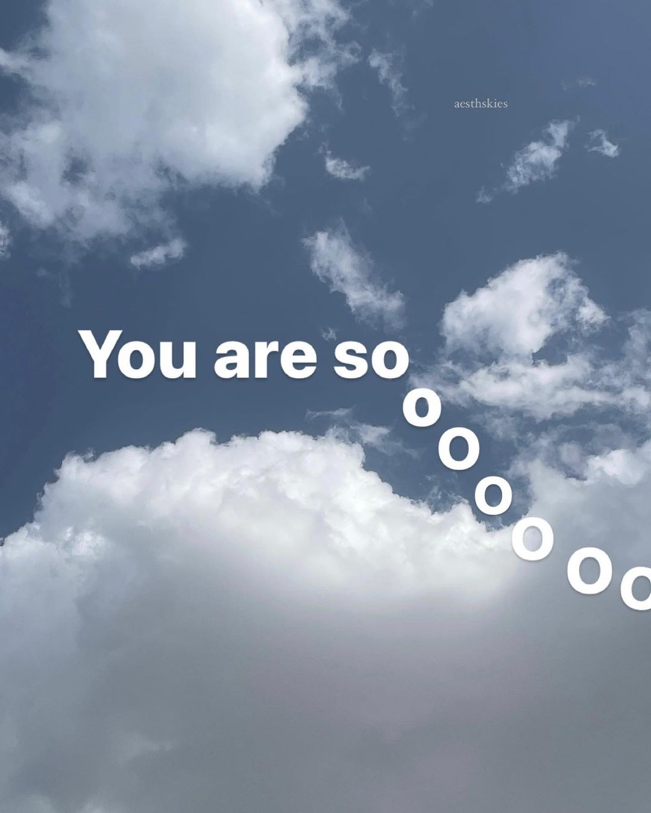
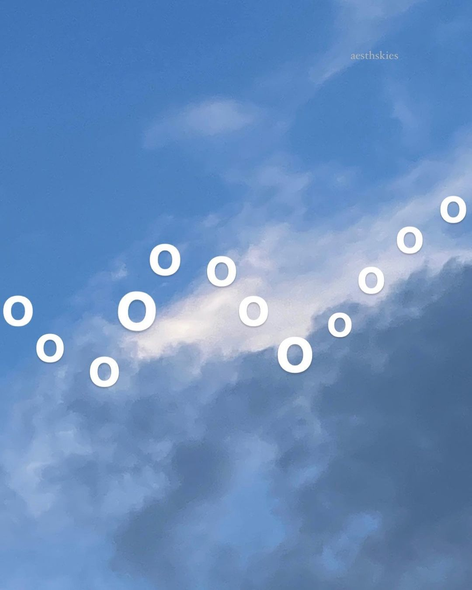
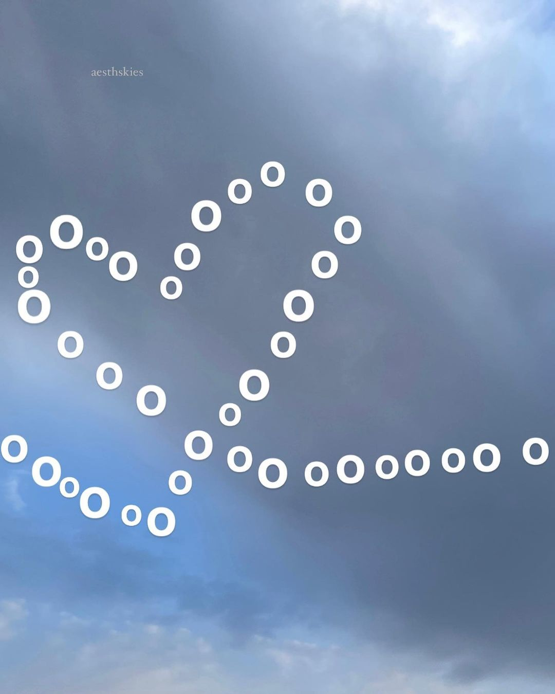
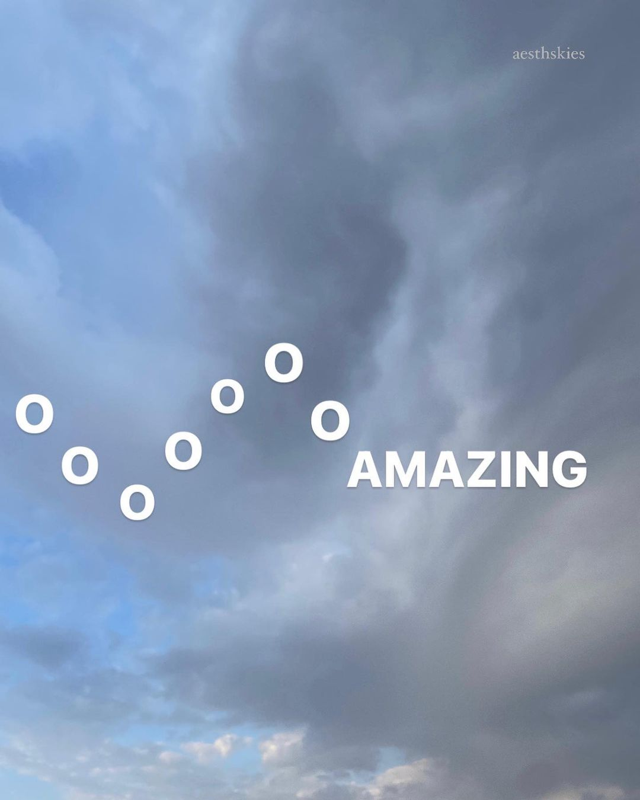

Aqui algunos post que me gustaron y quisiera compartirlo contigo




Nota: He estado aprendiendo diseño de páginas web hace una semana y quise
diseñar esta página especialmente para ti. El diseño de la carta lo hice yo mismo, ya que tengo
conocimientos en diseño gráfico. Dedico una hora y media al dia de mi tiempo libre para
aprender nuevos códigos, así que, con el tiempo estaré mejorando la página para que se vea mucho mejor.
También tengo conocimientos en diseño 3D, por eso, tengo muchos proyectos en mente de diversas temáticas.
Utilizaré mi creatividad para crear todos los que pueda. Si te gustaria ver el proceso de como lo hago, podria hacer un
video en camara rapida (tmb tengo conocimientos en edición de videos jaja). Como te mencioné antes, todo esto lo hago en mi tiempo
libre para demostrarte mis sentimientos a la distancia.